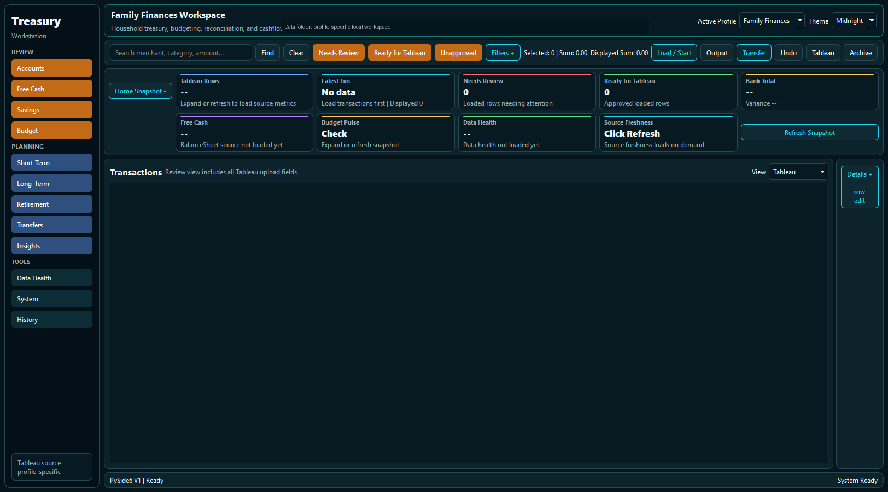
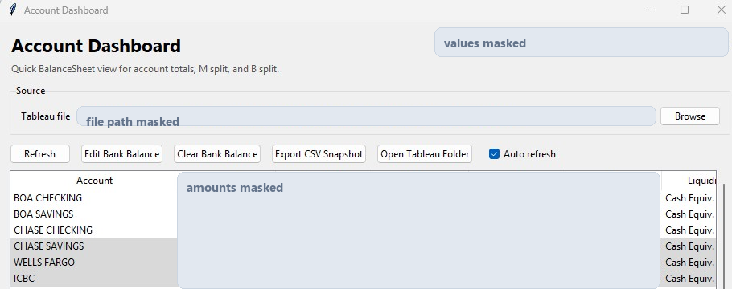
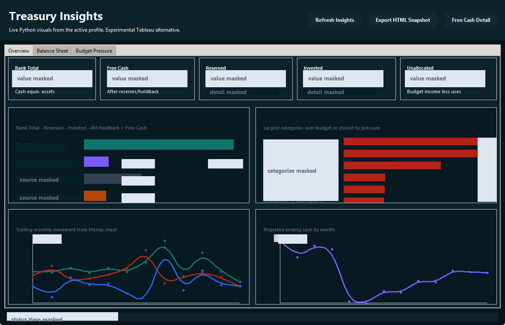

Featured build
Treasury Workstation
A finance operations command center for turning recurring cash, account, budget, reconciliation, and Tableau workflows into controlled repeatable processes.

Problem
Recurring treasury workflows often depend on exports, spreadsheet cleanup, account checks, budget review, and manual Tableau handoff. The work is repeatable, but the context is scattered across files, rules, and review steps.
Build
A Python desktop workstation with profile-based data handling, budget analysis, account reconciliation, cashflow forecasting, backup-aware Tableau export, undo support, and data-health checks.
Impact
Moves treasury work from disconnected manual steps into a repeatable operating surface: clearer exceptions, safer exports, faster review, and cleaner reporting inputs.
Tools
Gallery
Sanitized interface views.
These screens show the supporting Treasury modules behind the command center: account review, short-term planning, and Python-generated insights.



Centralizes cash, account, budget, and reporting workflows.
Preserves review, backup, and undo paths for safer exports.
Turns spreadsheet-heavy work into repeatable operating steps.
Surfaces data-health issues before downstream reporting.